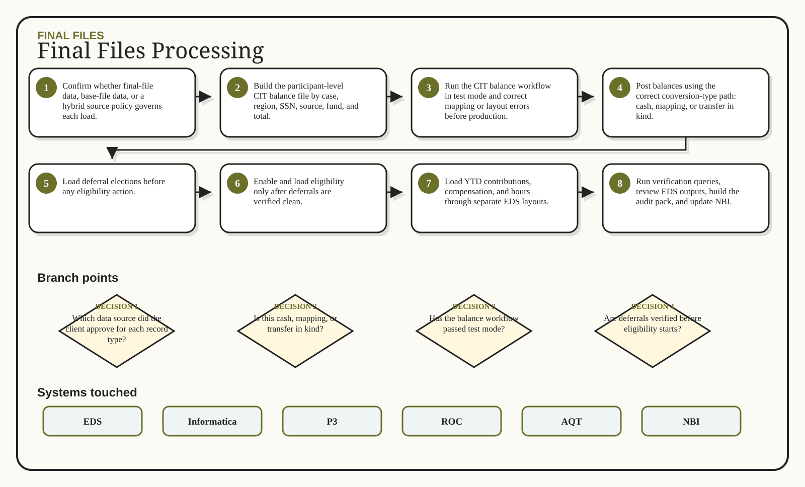

01
Confirm whether final-file data, base-file data, or a hybrid source policy governs each load.
Final files are the authoritative post-liquidation records. The DC confirms the source policy, posts participant balances by conversion type, then loads deferrals, eligibility, and YTD data in a strict order.
Confirm whether final-file data, base-file data, or a hybrid source policy governs each load.
Build the participant-level CIT balance file by case, region, SSN, source, fund, and total.
Run the CIT balance workflow in test mode and correct mapping or layout errors before production.
Post balances using the correct conversion-type path: cash, mapping, or transfer in kind.
Load deferral elections before any eligibility action.
Enable and load eligibility only after deferrals are verified clean.
Load YTD contributions, compensation, and hours through separate EDS layouts.
Run verification queries, review EDS outputs, build the audit pack, and update NBI.
Do not run eligibility before deferrals.
Wrong P3 processing mode can fire duplicate trades.
Cash and mapping paths need dummy-participant cleanup.
TIK needs fresh final-share estimates for Matt O'Connell's team.
EDS layouts should be ready before final files arrive.
